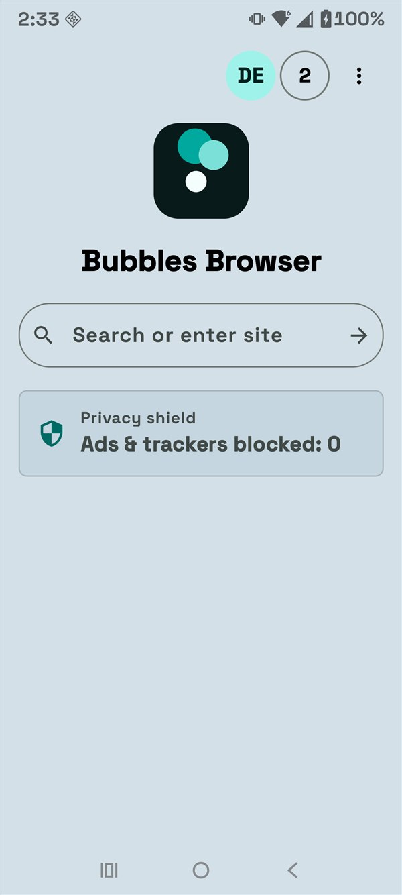
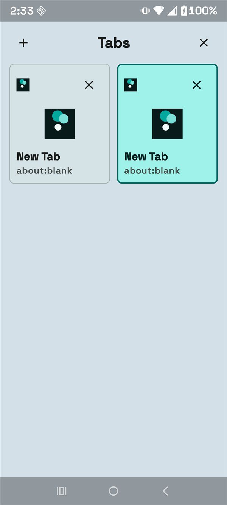
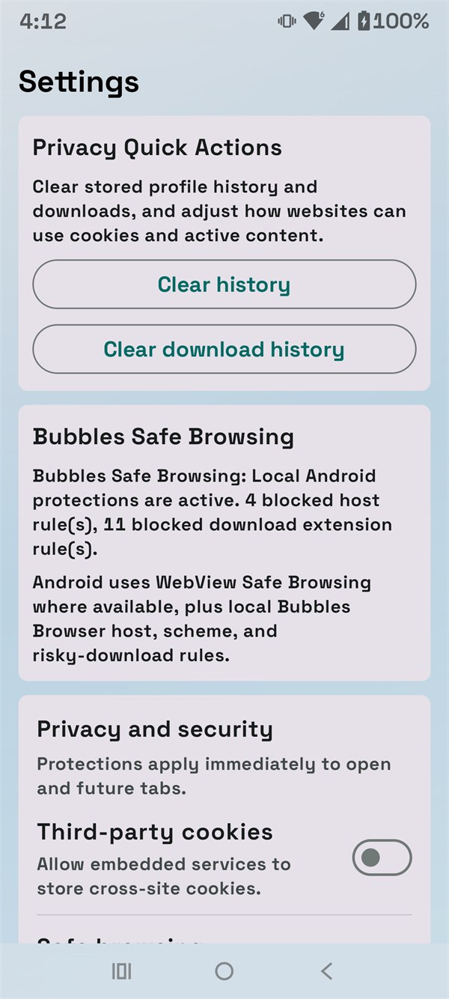
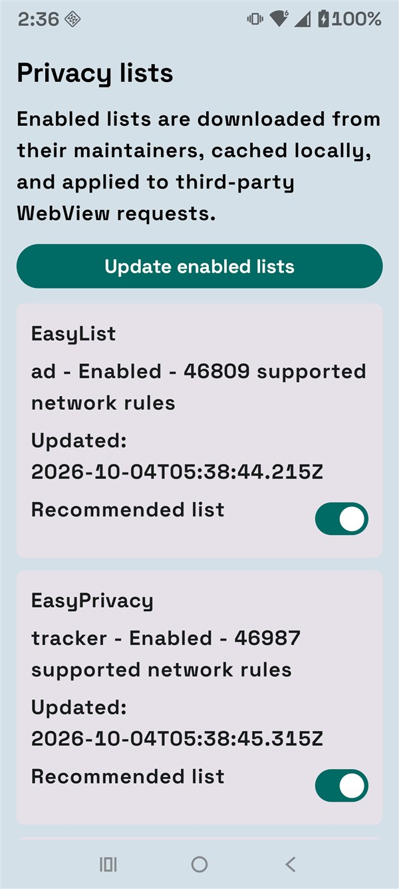
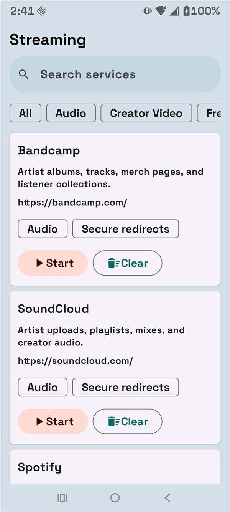

Open links by default
Choose Bubbles Browser from Android's official default-browser screen and open web links directly in the app.

Android 10+ · Version 1.0.10 · Build 40 · AI-free
A practical Android browser with privacy controls, profiles, downloads, streaming shortcuts, local music, and accessible settings.
Direct download from the official GitHub release. Google Play Protect can remain enabled.
Made for everyday Android browsing
Choose Bubbles Browser from Android's official default-browser screen and open web links directly in the app.
Core browser controls follow Android automatically across 29 supported locales, including Arabic, Asian, European, and Latin American languages.
Use tabs, bookmarks, history, downloads, search, and familiar navigation controls.
Block supported ads, trackers, malicious hosts, cryptomining requests, and tracking URL parameters.
Block supported YouTube ad and tracking requests while preserving normal video, audio, thumbnails, comments, and fullscreen playback.
Choose audio from your device and download direct audio-file links with completion notifications.
Launch supported video, live TV, sports, creator, personal-media, and audio services.
Keep profile bookmarks, history, downloads, and settings separate, with local backup tools.
Use text, contrast, motion, focus, reading-ruler, and simplified-interface controls.
Inside the app




A few taps on Android
Bubbles Browser is distributed through GitHub Releases. It is not currently listed in the Google Play Store.
Clear, local controls
Browser records stay on the device. Enabled privacy lists download automatically when no local cache exists, and the Trust Center separates ads, trackers, fingerprinting, malicious requests, cryptomining, and compatibility events.
Bubbles Browser contains no Ollama integration, generative AI, telemetry, analytics, or cloud synchronization.
Help when you need it
For broken websites, first update Android System WebView in Google Play, check the address and connection, then temporarily test with ad and tracker blocking disabled.